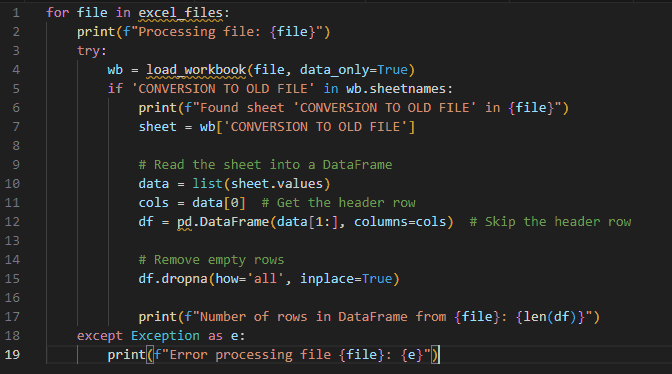
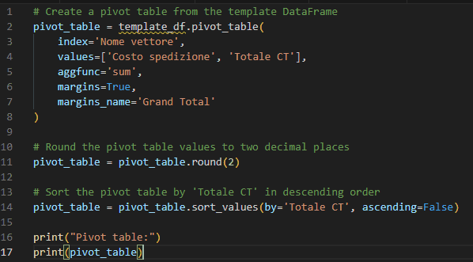

Il problema
I dati sui costi di spedizione arrivavano in tanti file Excel separati, sparsi in più cartelle. Ogni settimana qualcuno doveva aprirli uno per uno, copiare il foglio giusto in un file principale, sistemarlo e ricostruire a mano la tabella pivot: un lavoro lento e soggetto a errori.
La soluzione
Un unico script che esegue l'intero consolidamento dall'inizio alla fine:
RaccoltaIndividua tutti i file .xlsx in una cartella e nelle sottocartelle
Estrazione e puliziaLegge il foglio previsto, elimina le righe vuote, arrotonda i valori
ConsolidamentoAccoda ogni file al modello dalla prima riga libera
SintesiCrea una pivot di costi e totali per vettore, ordinata per totale


Risultati
- Consolidamento manuale settimanale eliminato
- Tabella pivot pronta appena lo script termina
- Qualsiasi numero di file gestito in un'unica esecuzione
- Errori intercettati e registrati, con tempo di esecuzione riportato
Stack
Python
Pandas
openpyxl
Excel
Nomi dei clienti e dati riservati sono stati omessi. Le immagini in questa pagina non contengono dati di clienti.